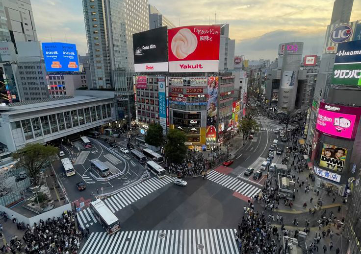

LUGARES ICÓNICOS
Shibuya Crossing
El cruce peatonal más famoso del mundo. Miles de personas lo atraviesan cada hora entre neones, pantallas gigantes y el ritmo frenético de la ciudad. Es la mejor forma de sentir la energía pura de Tokio.

Senso-ji (Asakusa)
El templo más antiguo de Tokio, cargado de historia y simbolismo. Su puerta roja, sus linternas gigantes y la calle comercial Nakamise crean uno de los ambientes más auténticos de la ciudad.

BARRIOS DESTACADOS
SHIBUYA CROSSING
Sed non urna. Donec et ante. Phasellus eu ligula. Vestibulum sit amet purus. Vivamus hendrerit, dolor at aliquet laoreet, mauris turpis porttitor velit, faucibus interdum tellus libero ac justo. Vivamus non quam. In suscipit faucibus urna.
ACTIVIDADES CULTURALES
SHIBUYA CROSSING
Nam enim risus, molestie et, porta ac, aliquam ac, risus. Quisque lobortis. Phasellus pellentesque purus in massa. Aenean in pede. Phasellus ac libero ac tellus pellentesque semper. Sed ac felis. Sed commodo, magna quis lacinia ornare, quam ante aliquam nisi, eu iaculis leo purus venenatis dui.
- List item one
- List item two
- List item three